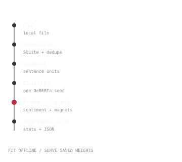
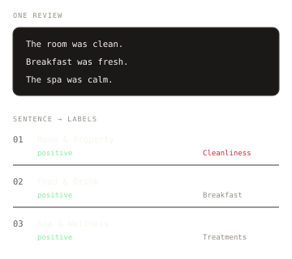
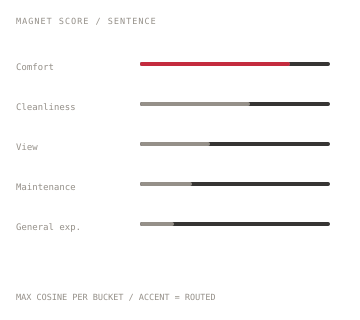

Cached results / ten reviews
What the classifiersees in ten reviews.
Every sentence is labelled with a category, a sentiment and a facet. These results are cached and read from JSON.
Overview
0 reviews
Reviews
Ten cached reviews
Select a review.
Method
How the labels are made

CSV to sentence, sentence to mention, mention to category counts.
Read the method
One review becomes sentence-level labels.
See the stages
Max cosine to the bucket's magnet words. The benchmark tests this against alternatives.
Read the results